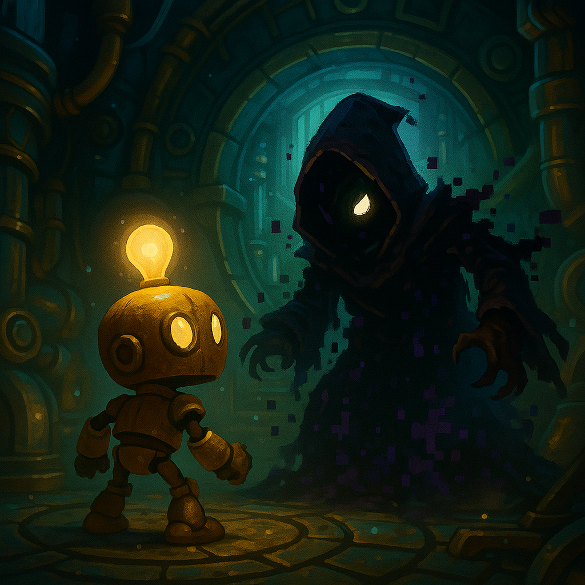
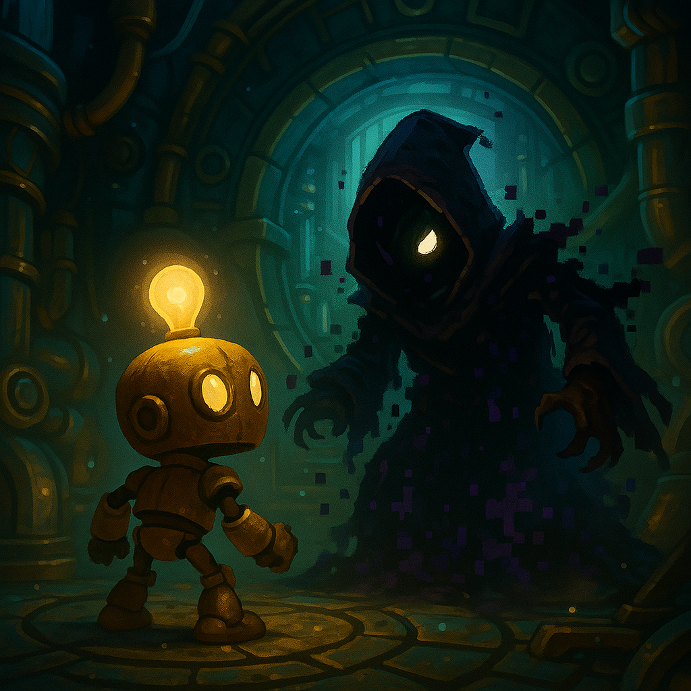

Aetherion is a world once ruled by kings, but now powered by cogs, coils, and clockwork. It is an age of invention, where the boundaries between magic and machinery blur. At its heart lies Cog City, the sprawling steampunk metropolis that ushered in the Gilded Era-a time of great technological advancement, social progress, and unprecedented peace.
Hundreds of years ago, a group of visionary engineers known as the First Artificers built Cog City on the back of an ancient, long-dormant Titan Engine—a living, mechanical mountain that once roamed the world. They tamed it, converted its core into a city-wide power source, and constructed layer upon layer of infrastructure, powered by steam, aether energy, and the mysterious Luminite Crystals.
Cog City became a beacon of civilization, a place where machines and sentient automatons lived alongside humans, inventors, and explorers. It was governed by the Council of Gears, a ruling body of scientists and machine-sages dedicated to progress and stability.
But prosperity made the Council blind. In their ambition to build the Aether Spire, a massive tower meant to draw energy from the skies themselves, they ignored warnings from the city’s central AI, OROS, guardian of the Great Gear Core.
The Spire's activation backfired catastrophically—an aether surge caused massive system failures, blackout across entire districts, and the awakening of Corruptbots, deranged automatons driven mad by aether exposure.
The Council vanished. The city fractured. Once self-sustaining, the Great Gear Core is now sputtering, and if it fails, the entire city will shut down—and fall from the sky.
From the ashes rose a small group of self-aware, specialized automaton prototypes—The Gearbound—originally built as maintenance bots for the city’s most dangerous jobs. When the Core glitched, their protocols were wiped, and something unexpected happened:
They became sentient.
Each Gearbound now possesses a fragment of OROS, giving them intelligence, personality, and free will. Guided by flickers of memory and a shared mission, they band together to repair the Core, uncover the truth about the Spire, and decide the fate of Cog City.

Born from broken systems and sparked into sentience, the Gearbound are more than maintenance bots. Each was designed for a specific purpose in Cog City—but now, they’ve evolved into heroes. With unique abilities, distinct personalities, and pieces of OROS embedded in their cores, these four are the city’s final hope.
Role: Vertical movement and spring-based traversal
Specialties: Double jumps, bounce chains, access to high places
Backstory: Springa was designed to maintain Cog City’s vertical gardens and high-altitude structures. Her elastic limbs and reinforced coil-legs make her the queen of movement. After gaining self-awareness, she embraced exploration with unrelenting joy. Her systems thrive on momentum—both in motion and mood.
Personality: Cheerful, impulsive, sometimes reckless. Speaks in bursts of excitement and unexpected wisdom.
Role: Fast mover, all-rounder, team leader.
Specialties: Dash burst, steam-vent jumps, piston punches
Backstory: Originally built to inspect high-pressure vents and emergency routes, Bolt became the first Gearbound to achieve sentience. Agile, reliable, and determined, Bolt often leads the group—more out of instinct than pride. His internal sensors flicker with forgotten blueprints and half-erased schematics, driving him to uncover the truth behind the city’s fall.
Personality: Balanced, curious, sarcastic under pressure. Acts as the emotional anchor for the team.
Role: Power-based support and environmental activation
Specialties: Electrical bursts, machine reactivation, overcharge puzzles
Backstory: Watt was created to maintain and balance Cog City’s power grid. When the surge occurred, he absorbed more than just electricity—he took in raw aetheric data, giving him not just strength, but insight. Watt is deliberate in his movements and words, always considering the greater outcome of every action.
Personality: Stoic, philosophical, loyal. Believes deeply in restoring balance—not just to the city, but to the Gearbound themselves.
Role: Terminal access, stealth, intelligence gathering
Specialties: Hacking panels, brief invisibility, remote gadget control
Backstory: Hex was part of Cog City’s internal defense system—a security subroutine given physical form. As OROS fractured, her purpose fragmented, leaving behind traces of code from both the Council and the rogue AI network. She now walks the line between watcher and warrior, wielding data as deftly as others wield tools.
Personality: Sharp, dry, observant. Knows more than she lets on—especially about OROS and the Aether Spire.
Cog City is divided into five sprawling districts, each with its own atmosphere, hazards, and secrets. From the molten depths of Brass Borough to the sky-scraping mystery of the Aether Spire, every realm offers unique challenges and lore.
Theme: Steam vents, molten metal, broken machines
Description: Once the city's main manufacturing hub, Brass Borough is now rusted and unstable. Conveyor belts grind against jammed cogs, and the air is thick with soot and pressure. It’s where your journey begins—hot, heavy, and full of secrets.
Key Features: Furnace puzzles, gear elevators, steam-platforming
Theme: Overgrown greenhouses, hybrid flora, collapsing eco-labs
Description: A district once meant to feed the city has become a wild and living labyrinth. Vines strangle machinery, and plants mutated by aether energy lash out. Water puzzles and high-flying bounce mechanics rule here.
Key Features: Spring-based traversal, root mazes, bio-mechanical bosses
Theme: Ticking gears, time puzzles, market ruins
Description: This was the beating heart of daily life—shops, lifts, and time-regulated platforms. Now it's stuck in a broken rhythm. Expect vertical puzzles, platform syncs, and a very aggressive gear-based sentinel.
Key Features: Rotating floors, market minigames, time-based switches
Theme: Power outages, corrupted terminals, dark corridors
Description: Deep beneath Cog City lie the power vaults—once brilliant, now pitch-black. Surging conduits, glitching bots, and electric puzzles await those brave enough to descend. Bring a light... or be one.
Key Features: Circuit logic puzzles, blackout areas, terminal hacking
Theme: Floating platforms, anti-gravity, corrupted energy
Description: The Spire was the city’s greatest ambition—and its final mistake. The structure now floats in broken silence, warped by raw aether. Gravity shifts, mirrors lie, and your final choices await.
Key Features: Aether storm hazards, puzzle illusions, moral final choice
Each district in Cog City is a story in itself, a puzzle box to unravel. As the Gearbound, you'll explore every gear, shadow, and secret Cog City has to offer.
Each district in Cog City contains two major story levels (plus one final Spire mission), blending puzzles, platforming, combat, and narrative discovery. These missions restore sections of the Great Gear Core and move the story forward.
Objective: Restart the furnace and reroute steam pressure.
Boss: Moltdown – lava-fused smelter bot.
Features: Steam vents, molten hazards, vent jumping.
Objective: Restore light to the factory during a blackout.
Unlock: Hex’s stealth skills.
Features: EMP zones, flashlight puzzles, hacking terminals.
Objective: Disable a rogue eco-AI causing plant overgrowth.
Unlock: Springa’s bounce powers.
Features: Vine puzzles, water rerouting.
Objective: Rescue bots from the overgrown lab.
Boss: The Bloommother – hybrid floral enemy.
Features: Pollen clouds, bounce combat, toxic zones.
Objective: Restore the city’s time system via platform syncing.
Features: Clock hands, lift puzzles, rotating gears.
Objective: Defend the district square from attack.
Features: Hovercrate defense, merchant NPCs, traps.
Objective: Traverse pitch-dark vaults and restore emergency power.
Boss: Dimmrking – a darkness-based glitch entity.
Features: Circuit puzzles, darkness hazards, flickering lights.
Objective: Solve 3 giant circuit puzzles to reactivate the core.
Features: Pulse puzzles, rotating logic rings.
Objective: Confront OROS and determine the city’s fate.
Boss: Glitched OROS – multi-phase final battle.
Features: Anti-gravity, aether storms, final choice.
Each level unlocks new powers, expands the world map, and brings the Gearbound closer to the truth. Choose your path wisely—some levels contain secrets that change the ending forever.

Location: All districts (especially Brass Borough, Sprocket Square)
Appearance: Boxy frame, red eye, erratic behavior
Lore: Maintenance bots driven mad by the Aether surge.
Abilities: Slap combo, self-destruct, jamming pulses
Tactics: Weak to shock and bounce; best cleared in groups
Location: Level 1 – The Sputtering Smelter
Appearance: Spider-frame, glowing joints
Lore: Industrial drones now skitter and overheat uncontrollably.
Abilities: Wall leaps, steam bursts
Tactics: Stun mid-leap or lure into vent traps
Location: Furnace Core, Brass Borough
Appearance: Lava-armored version of Foundry Drone
Lore: Smelter AI mutated by extreme heat.
Abilities: Lava floor, heat wave, flame bombs
Tactics: Cool vents, jump pad dodging, valve timing
Location: Gleam Gardens
Appearance: Carnivorous plant with mech tendrils
Lore: A forgotten security bio-hybrid now rogue.
Abilities: Spore bombs, vine latch, foliage shield
Tactics: Bounce behind or disable with water pipes
Location: Gleam Gardens (walls and platforms)
Appearance: Camouflaged snapping jaws
Lore: Rapid-growth plant mutated by eco-tech.
Abilities: Stuns, ambushes, chain-links
Tactics: Use ranged tools or stealth to bypass
Location: Multiple districts
Appearance: Round body, tools for arms
Lore: Former helpers—some now corrupted, some friendly NPCs.
Variants: Friendly (e.g., Flicker), Hostile (“Malfunction Mode”)
Location: Volt Vaults, digital terminals
Appearance: Flickering, glitching distortion
Lore: Data ghosts—echoes of corrupted programs.
Abilities: Teleport, temporary invisibility, disable gadgets
Tactics: Track with Hex and strike during pulses
Location: Volt Vaults – Core Depths
Appearance: Cloaked silhouette, glowing eye
Lore: A corrupted fragment of OROS, born of isolation.
Abilities: Shadow clones, darkness shroud, UI disruption
Tactics: Use light pulses and sound to find and defeat
Location: Clocktower – Sprocket Square
Appearance: Giant mech with piston arms and gear chest
Lore: A former city defender now enforcing corrupted order.
Abilities: AOE shockwave, spinning gear missiles, magnetic field
Tactics: Disable via short-circuit traps and hit exposed back core


 
